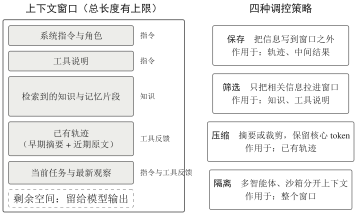
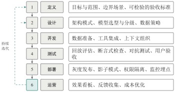

6.5 支撑智能体的技术与工程
七项能力靠什么技术实现？怎样把这些技术组织成一个能上线的系统？本节先按“认知核心—学习方法—规划算法—结构化知识—其他使能技术”的顺序介绍支撑技术，重点说明每种技术解决什么问题、在什么条件下失效；然后讨论把它们组织起来的三项工程工作：上下文工程决定每一步让模型看到什么，开发框架提供现成的循环、工具与记忆部件，开发流程从定义验收标准一直走到上线后的持续运营。结论是：智能体的每个部件，都能在 LLM 的某条局限上找到存在的理由。
6.5.1 大语言模型：认知核心与它的边界
LLM 常被用作智能体的中央处理单元：解析用户输入、理解任务目标、进行推理和规划，并生成自然语言回复或行动指令。除此之外，它还提供三样东西：自然语言接口——借助自然语言处理技术，用户用日常语言（文字或语音）下达指令，不必学习特定语法，降低了委托任务的门槛；知识来源——参数中蕴含大量世界知识，可以充当内置知识库，在缺少外部数据时也能做出合理判断；内容生成——撰写报告、摘要、代码、邮件，使智能体不仅能“做事”，还能“交付”。
但把 LLM 作为认知核心，必须清楚它的边界。这些边界源自当前模型的工作方式，短期内难以根除：
幻觉：生成看似合理但与事实不符的内容，且语气的笃定程度与正确与否无关（成因见第 2.4.7 小节）。智能体的每一步都建立在上一步之上，错误会被放大。
知识截止：参数中的知识停留在训练数据的时间点。
上下文有限：窗口再长也有上限，长任务必然要取舍信息。
推理不稳定：同一问题换个说法可能得出不同结论，多步推理的误差会累积。
对齐与校准不足：模型可能迎合用户（即所谓“谄媚”），也可能对错误答案过度自信（置信度与正确率不匹配，称为校准不良），这些倾向在执行任务时会被放大。
这些边界决定了智能体的结构：为缓解幻觉，要用工具校验；为弥补知识截止，要检索；为突破上下文限制，要记忆；为应对推理不稳定，要反思和多路径验证；为防范对齐与校准不足，要人参与把关。这些手段只能缓解，不能根除——工具和检索本身也可能出错。
这也给出了“要不要做成智能体”的判断方法：看任务链条有多长、外部信息是否必需、错误能否被发现。任务短、信息都在模型里，一次调用就够了；任务长或需要外部信息，并且错误能被校验时，智能体增加的复杂度才值得；如果错误无法校验，宁可缩小任务范围或保留人工审核。
6.5.2 机器学习：从数据中习得策略
智能体的“学习”能力由机器学习提供。三类学习范式在智能体中各有落点。
监督学习（supervised learning）用带标签的数据训练，学习输入到输出的映射。在智能体中主要用于感知（意图分类、实体抽取、图像识别）和工具选择（给定上下文，预测该调用哪个工具、填什么参数）。它稳定、便于评估，但需要标注数据，难以覆盖少见情形。
无监督学习（unsupervised learning）从未标注数据中发现隐藏的模式或结构。它在智能体中最典型的应用是表示学习：把文本、记忆片段、工具说明编码成向量，使语义相似度可以计算。向量检索、聚类去重、异常检测都建立在这一基础上。
强化学习（Reinforcement Learning，RL）通过与环境交互来学习：智能体采取行动，环境给出奖励或惩罚，智能体学习一个策略 \(\pi\)（在什么状态下采取什么行动），以最大化累积奖励。形式上，优化目标是 \[J(\pi) = \mathbb{E}_{\tau\sim\pi}\Bigl[\,\sum_{t=1}^{T_{\mathrm{ep}}} \gamma^{t-1} R_t\Bigr], \tag{6-6}\] 其中 \(\tau\) 是按策略 \(\pi\) 与环境交互得到的一条轨迹，\(R_t\) 是第 \(t\) 步的奖励，\(T_{\mathrm{ep}}\) 是一个回合的步数，\(\gamma\in[0,1]\) 是折扣因子，决定了智能体有多看重远期收益。强化学习与智能体共享同一个问题结构——序贯决策，也就是式 （6-1） 中的闭环（标准强化学习多假设状态完全可观测，用 MDP 表述，闭环结构相同）。
把 RL 直接用于训练 LLM 智能体有三个困难：奖励稀疏——长任务往往只有最终成败一个信号，难以判断中间哪一步做得好；试错昂贵——真实环境中的错误可能无法承受；环境在变——模型、工具、用户偏好都在变化，学到的策略可能很快过时。因此实践中多用两种较“轻”的方式：用人类反馈做偏好对齐，即基于人类反馈的强化学习（Reinforcement Learning from Human Feedback，RLHF），以及在结果可以自动判定的任务上（例如单元测试是否通过）用可验证奖励做强化学习（二者见第 3.8 节）。智能体在上线运行中的“学习”，目前主要发生在提示和记忆层面；参数层面的学习多在离线开发阶段进行。
6.5.3 规划算法：从经典搜索到 LLM 规划
规划算法回答“如何从当前状态走到目标状态”，第 6.4.2 小节讲了规划能力，这里列出可用的算法。
经典规划算法包括：搜索算法（广度优先、深度优先、Dijkstra 最短路径）；启发式搜索（A* 算法、贪心最佳优先），用一个估计“离目标还有多远”的启发函数引导搜索；STRIPS 类规划器，用前置条件与效果描述动作；以及部分有序规划，只规定必须先后执行的步骤顺序，其余步骤可以任意排列或并行。它们假设状态能被符号精确描述、动作效果是确定的，在此假设下能给出完备甚至最优的解。
高级规划技术放宽了这些假设：时间规划处理有时限和并发约束的任务（会议 9 点开始，酒店 14 点才能入住）；概率规划处理动作效果不确定的情形，常建模为马尔可夫决策过程（Markov Decision Process，MDP，用状态、动作、转移概率和奖励描述序贯决策；它假设状态完全可观测，式 （6-1） 的 POMDP 则去掉了这一假设）；偏好规划处理多个目标之间的权衡（省钱与省时）；条件规划为执行中才会知道的信息预留分支（“如果航班取消，就改乘高铁”）。它们更贴近真实世界，求解难度也明显上升。
LLM 规划提供了另一条路：通过单路径推理（如思维链）或多路径推理（如思维树）分解任务、生成步骤，也可以与外部经典规划器结合（第 6.4.2 小节的“翻译器”方式）。它不需要先把问题形式化，代价是没有正确性保证。稳健的规划子系统往往三者并用：经典算法处理能形式化的子问题（路线、排期），LLM 处理需要常识的子问题（“这次出差需要准备哪些材料”），高级规划技术处理不确定性和多目标。
6.5.4 知识图谱：结构化的外部知识
知识图谱（Knowledge Graph，KG）以“实体—关系—实体”的三元组为基本单元，把知识组织成可查询、可推理的网络，例如（甲酒店，位于，浦东新区）。它在智能体中承担五项职能：
提供上下文与背景知识：查询特定实体或概念的详细信息，帮助理解用户请求。用户说“还是老地方”，系统查到该用户常住的酒店，从而弄清指代。
支持结构化推理：图中的显式关系可用于确定性的逻辑推断，补充 LLM 在精确多跳推理和形式推理上的不足。“A 是 B 的子公司，B 在供应商黑名单上”这类多跳关系，用图查询可以精确得到。
增强记忆：作为长期记忆的一部分，存储结构化的事实和经验。与纯文本相比，它在精确召回和关系推理上更有优势。
处理歧义与不完整信息：编码的语义信息帮助区分多种解释（“苹果”指公司还是水果），并能通过推理填补数据中的空白。
作为多智能体的共享记忆：充当通信媒介和共享知识库，使所有智能体对同一领域有一致的理解，避免各自维护一份“事实”而产生冲突。
知识图谱构建成本高、更新慢、覆盖面有限，因此常与文本检索混合使用：结构化查询负责精确约束，向量检索负责语义召回（GraphRAG 等做法见第 5.5 节）。
6.5.5 其他使能技术
计算机视觉（computer vision）使智能体能“看见”并理解视觉环境，识别物体、场景、人脸等。视觉语言模型让智能体可以直接读截图、表格、图表和扫描件，很多企业流程的入口恰恰是一张扫描件或一个网页界面。机器人流程自动化（RPA）自动执行基于规则的重复性操作，例如数据录入、表单处理；它通过软件模拟人在界面上的点击和输入，依赖固定的界面元素定位，界面一改版就会失效。它与智能体互补：智能体通过工具调用触发 RPA 脚本，RPA 提供稳定的“手”，智能体提供灵活的“脑”，在没有 API 的老旧系统里，“智能体决策 + RPA 执行”常是唯一可行的方案。云计算为智能体的训练、部署和扩展提供算力、存储和弹性；智能体的主要开销是模型调用，并随任务轮数增长（例 6-1），成本控制需要专门设计。边缘计算（edge computing，其中面向 AI 的部分常称边缘 AI）把 AI 处理能力部署到靠近数据源的设备上，减少对云端连接的依赖，提高实时性和数据隐私性，对机器人和隐私敏感场景往往是刚需。
表 6-10 汇总了各项技术与智能体组件的对应关系。
表 6-10 使能技术与智能体组件的对应关系
| 技术 | 主要支撑 | 解决的问题 | 主要局限 |
|---|---|---|---|
| 大语言模型 | 决策系统 | 语义理解、推理、生成 | 幻觉、知识截止、上下文有限 |
| 监督/无监督学习 | 感知、表示 | 分类、抽取、语义匹配 | 依赖数据质量与覆盖面 |
| 强化学习 | 策略优化 | 序贯决策的长期回报 | 奖励稀疏、试错昂贵 |
| 经典与高级规划 | 规划 | 多步行动的可行性与最优性 | 需要形式化建模 |
| 知识图谱 | 记忆、推理 | 结构化事实与关系推理 | 构建成本高、更新慢 |
| 计算机视觉 | 感知 | 图像、版面、场景理解 | 复杂版面和低质量图像易错 |
| RPA | 执行器 | 无 API 系统的操作自动化 | 界面一变就失效 |
| 云计算/边缘计算 | 运行环境 | 算力、弹性、时延与隐私 | 成本与运维复杂度 |
6.5.6 上下文工程
模型在每一步能依据的，只有这一刻上下文窗口里的内容。上下文工程（context engineering）就是围绕“在上下文窗口中为下一步操作填充恰好适量的信息”这一目标形成的一套方法[20],[21]。有从业者把它称为构建 AI 智能体的工程师的首要任务[22]：模型能力既定时，上下文的质量往往比提示词的措辞更决定成败。本小节介绍它的基本框架，作为编程智能体四类工程之一的系统论述见第 7.4 节。
三类上下文 进入窗口的信息可分为三类：指令，包括系统提示词、少样本示例、工具说明和从记忆中取出的规则；知识，包括事实、检索到的文档和记忆片段；工具反馈，即工具调用后返回的结果。三类信息的管理方式不同：指令相对稳定，可以缓存复用；知识随任务变化，按需检索；工具反馈不可预测，常需压缩和结构化。图 6-8 左侧是一个典型窗口的构成。

图 6-8 上下文窗口的典型构成（左，框高示意各部分的相对占用，右侧小字为所属类型）与四种调控策略（右）。四类失效——污染、干扰、混淆、冲突——都发生在窗口内部，四种策略分别从窗口外存储、进入窗口、窗口内精简和窗口之间分隔四个方向加以控制
四类失效 上下文不是越多越好。Breunig 总结了长上下文导致性能下降的四种方式[23]：
上下文污染（context poisoning）：幻觉信息混入上下文后，被后续步骤当作事实反复引用。模型看到自己先前的错误陈述，更倾向于认为它是对的。
上下文干扰（context distraction）：信息过多，超出模型训练时能有效利用的范围，关键信息被淹没；窗口装得下，不等于模型用得上。
上下文混淆（context confusion）：冗余或无关的信息（例如几十个用不上的工具说明）干扰决策，模型抓错重点。
上下文冲突（context clash）：上下文中的内容相互矛盾（例如先后两轮给出的不同条件），模型的选择不可预测。
四种策略 针对这些问题，实践中常用四种调控策略[24]（图 6-8 右侧）：
保存（write）：把信息存到窗口之外（文件、记忆库、任务状态），供以后使用。
筛选（select）：只把与当前步骤相关的信息拉进窗口，例如按相似度检索文档、按任务挑选工具。
压缩（compress）：通过摘要或裁剪，只保留任务需要的 token，例如把已完成的轮次合并成一段摘要。
隔离（isolate）：用多个智能体、沙箱或状态字段把上下文分开，让子任务在各自的窗口中工作，互不污染。这是多智能体架构在工程上的重要收益之一。
核心组件 一个完整的上下文工程体系通常包含四个部分：智能信息检索（以 RAG 为主要手段，从外部知识源召回相关内容，见第 5.2 节）；动态上下文组装（按任务阶段和 token 预算，把指令、知识、工具反馈拼成窗口）；智能记忆管理（跨轮次、跨会话地保存与召回）；多模态信息处理（把图像、表格、音频转成模型可用的形式）。
从 token 限制到记忆架构 长任务中，当前大模型面临两个具体困境：token 限制，窗口有上限且成本随长度上升；状态丢失，会话中断或上下文被裁剪后，之前的工作状态无法恢复。一类常见做法是借助 MCP，把记忆和会话状态做成外部服务：智能体通过 MCP 服务器提供的工具读写记忆（MCP 官方的参考实现中就有一个基于知识图谱的记忆服务器[25]），从而实现三件事——按稳定性和重要性分层管理上下文，稳定部分缓存复用、易变部分按需加载；显式地保存与恢复会话，使任务能跨会话延续；在接近上限时自动摘要、裁剪、外置，压缩上下文而不丢关键信息。需要注意，MCP 本身只是连接协议，并不负责压缩或分层，这些功能由接在协议另一端的记忆服务实现。与之配套的正是第 6.4.4 小节的三层记忆，它带来四点好处：连续性（跨会话保持工作状态和决策记录）、智能化（自动评估和管理信息的重要性）、可扩展性（支持企业级的大规模部署）和安全性（按层级控制敏感信息与个人隐私的存取）。
辨析
上下文工程不是“提示词工程的升级版”。提示词工程关心“如何把一段指令写清楚”；上下文工程关心“在每一步，让模型看到哪些信息、以什么顺序、占多少预算”，涉及检索、记忆、压缩、隔离和安全边界，是一个系统设计问题。提示词只是上下文中“指令”那一部分。
6.5.7 开发框架
循环、工具调用、记忆、多智能体协作等常用模式，在 2023—2025 年间沉淀为一批开发框架。框架把重复的“脚手架”固化下来，让开发者专注于任务逻辑；风险在于抽象泄漏——当框架的默认行为不符合需求时，开发者不得不深入框架内部修改。表 6-11 对照了五个常用框架。框架迭代很快，表中状态截至 2026 年 11 月，选型时应以官方文档和实际测试为准。
表 6-11 常用智能体开发框架对照（状态截至 2026 年 11 月）
| 框架 | 特性 | 典型场景 | 主要语言 | 仓库创建 | 状态 |
|---|---|---|---|---|---|
| LangChain | 链式调用，集成模型、工具、记忆与 Agent | 聊天机器人、文档处理、RAG、企业流程 | Python、JavaScript | 2022 年 10 月 | 2025 年 10 月 22 日发布 1.0 |
| LangGraph | 以图描述有状态、可控的（多）Agent 工作流 | 多步骤流程、动态决策、人工介入 | Python、JavaScript | 2023 年 8 月 | 2025 年 10 月 22 日发布 1.0 |
| AutoGen | 多 Agent 对话与协作，异步，可定制角色 | 群聊式求解、代码生成与调试 | Python、.NET | 2023 年 8 月 | 仓库说明已不再由微软维护，建议新项目改用 Microsoft Agent Framework |
| CrewAI | 角色扮演式 Agent 团队，任务委派 | 调研、项目管理、内容创作 | Python | 2023 年 10 月 | 独立开源框架，已发布 1.x 版本 |
| Semantic Kernel | 企业级 SDK，插件（技能）封装与函数调用，多语言 | 把 AI 嵌入现有业务系统，与 Azure 集成 | C#、Python、Java | 2023 年 2 月 | 仓库说明已由 Microsoft Agent Framework 接替（后者 2026 年 4 月 3 日发布 1.0） |
表中五个框架的源代码都以 MIT 许可证开源，AutoGen 的文档另按 CC-BY-4.0 授权。“主要语言”和“仓库创建”两列取自各项目 GitHub 仓库的公开信息[26]，“状态”一列取自各项目的官方博客与仓库说明[27],[28]。AutoGen 的设计见其论文[29]。保留五个框架分列，是因为它们的设计思路不同；AutoGen 与 Semantic Kernel 的后续开发已汇入同一个 Microsoft Agent Framework。此外，主要模型厂商也推出了自己的智能体开发工具包，例如 OpenAI Agents SDK、Google 的 Agent Development Kit 和 Anthropic 的 Claude Agent SDK，它们与各自的模型服务结合更紧密。
选型时可以先问三个问题。第一，控制流有多复杂？流程线性、步骤固定，轻量框架就够；包含循环、分支、并行与人工介入，就需要图式编排。第二，对可观测性要求多高？生产系统必须能回放每次运行的完整轨迹，包括每次模型调用和工具调用的输入输出；框架若不内建追踪，需要额外埋点。第三，团队已有什么技术栈？企业环境往往要求与既有的身份认证、权限和监控体系集成，这比功能多少更重要。还要记住，框架不能替你定义任务：许多项目失败，不是框架选错，而是任务边界、成功标准和异常处理没有想清楚。
6.5.8 开发流程：从定义到运营
智能体的开发流程与常规软件工程相似，但重心不同。图 6-9 给出一个六阶段的生命周期，运营阶段的反馈会回到定义与设计。

图 6-9 智能体系统的开发生命周期。实线箭头为开发顺序；虚线表示运营阶段收集到的数据与反馈回流到定义和设计阶段
定义 明确目标、范围和成功指标：系统完成什么、不完成什么、什么条件下算成功。产出应是可检验的验收标准，而不是愿景描述。“帮用户规划差旅”不是验收标准，“5 分钟内给出满足预算、时间与偏好约束的方案，所有价格都能追溯到查询结果”才是。同时要列出边界场景，明确哪些错误可以接受、哪些绝不能发生。
设计 确定架构、模型与数据策略。架构选择包括：单智能体还是多智能体，ReAct 式还是计划—执行式，是否需要长期记忆，工具边界如何划分。模型选择不是越强越好，要综合能力、时延、成本和可控性，常见做法是分级使用：强模型做规划和复杂推理，轻量模型做分类、抽取和格式转换。数据策略包括工具返回数据如何整理、轨迹如何留存、评估集如何构建。
开发 包括数据准备、必要时的模型微调，以及工具集成和上下文组织。工具按第 6.2.3 小节的原则设计；上下文按第 6.5.6 小节的策略组织：什么常驻、什么按需检索、什么压缩、什么隔离。
测试 智能体的输出不确定、路径不唯一，测试比常规软件难。有效做法包括：回放评估，把真实请求固定下来，比较改动前后的行为差异；断言式检查，不比对完整输出，只检查关键约束（价格在预算内、必填字段齐全）；对抗测试，构造注入攻击、边界输入和互相冲突的指令；用户验收，让真实用户在真实任务上使用，观察完成率和需要人工干预的比例。
部署 关键词是“渐进”：灰度发布，影子模式（新系统在后台运行但不影响用户），功能开关，以及权限隔离和监控埋点。智能体的行为依赖模型版本，模型升级要像代码发布一样做回归测试，并保证可以回滚。
运营 上线不是终点。需要持续跟踪任务成功率、平均轮数、平均成本、人工干预率和失败原因分布，用看板呈现并把用户反馈送回前面各阶段。例 6-2 已经说明，单步可靠性的微小变化会被步数放大，因此环境或模型一有变化，效果就可能明显下降；没有运营闭环的系统会在环境变化后迅速失效。